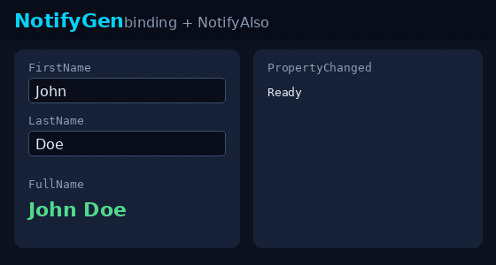

NotifyGen
Zero-runtime INotifyPropertyChanged source generator.

dotnet add package NotifyGen
using NotifyGen;
[Notify]
public partial class Person
{
private string _firstName;
private string _lastName;
[NotifyComputed]
public string FullName => $"{FirstName} {LastName}";
}
Start here
- Generated code before / after — aha without cloning
- Migrate from CommunityToolkit — coexistence checklist
- Features — full reference
- Samples — WPF, Avalonia, MAUI, Hybrid
Recommended stack: NotifyGen for properties, CommunityToolkit.Mvvm for commands.